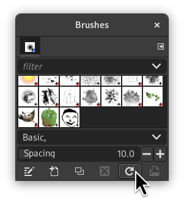
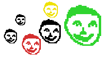

Há duas formas de criar um pincel facilmente:
-
Primeiro, o método super-rápido. Se você tem uma área de uma imagem que gostaria que fosse um pincel, para ser usada por uma ferramenta como o Lápis, Aerógrafo ou qualquer ferramenta de pintura: Selecione a sua área de interesse com a ferramenta de seleção retangular (ou qualquer outra), e então vá em editar->copiar (ou pressione Ctrl + C). Você poderá ver imediatamente esta cópia na primeira posição do diálogo de pincéis, com o nome de “Área de transferência”. Você pode usa-lo imediatamente.
Este pincel é temporário: ele desaparece quando você fecha o GIMP. Você pode torná-lo permanente clicando no botão na parte inferior do painel de pincéis.
-
O segundo método é mais elaborado.
Select → from the main menu.
Defina Largura e Altura, por exemplo, para 30 pixels.
Nas Opções avançadas, defina, por exemplo, o Espaço de cor para Escala de cinza e defina Preencher com para Branco.
Amplie essa imagem com um bom fator de zoom, e use a ferramenta de lápis, com a cor preta para desenhar.
Select → from the main menu.
Export the image with a
.gbrextension in thebrushesdirectory located inside your personal GIMP configuration folder.In the Brush Dialog, click on the button
 .
.
E veja seu maravilhoso pincel aparecer bem no meio dos outros pinceis. Você pode usa-lo imediatamente, sem reiniciar o GIMP.
Figura 7.21. Passos para criar um pincel

Desenhe a imagem, exporte como pincel

Atualize os pinceis

Use o pincel